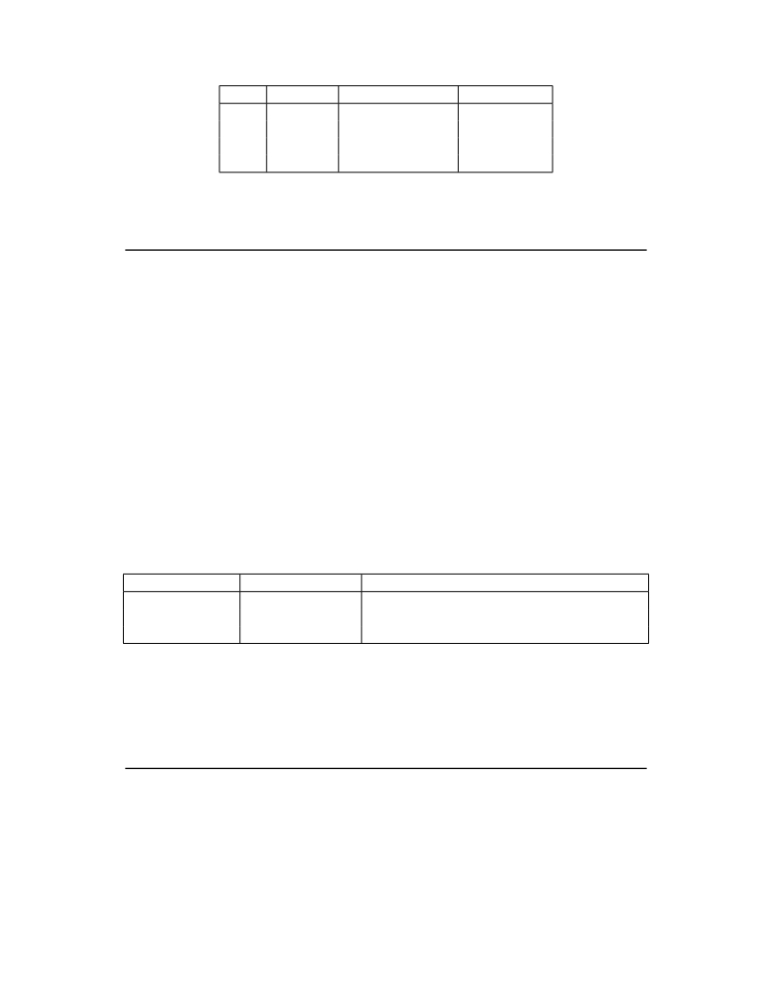

<table border="0" height="1453" width="1123">
<tr><td>
<div style="position:absolute; top:0; left:0;"></div>
<div style="position:absolute;top:74.119;left:132.145;"><nobr>
<span style="font-size:20.022;font-style:italic;">Volume II: RISC-V Privileged Architectures V20190608-Priv-MSU-Ratified</span>
</nobr></div>
<div style="position:absolute;top:74.119;left:981.077;"><nobr>
<span style="font-size:20.022;">3</span>
</nobr></div>
<div style="position:absolute;top:128.598;left:330.613;"><nobr>
<span style="font-size:20.022;">Level</span>
</nobr></div>
<div style="position:absolute;top:154.195;left:348.549;"><nobr>
<span style="font-size:20.022;">0</span>
</nobr></div>
<div style="position:absolute;top:179.062;left:348.549;"><nobr>
<span style="font-size:20.022;">1</span>
</nobr></div>
<div style="position:absolute;top:203.931;left:348.549;"><nobr>
<span style="font-size:20.022;">2</span>
</nobr></div>
<div style="position:absolute;top:228.799;left:348.549;"><nobr>
<span style="font-size:20.022;">3</span>
</nobr></div>
<div style="position:absolute;top:128.598;left:399.170;"><nobr>
<span style="font-size:20.022;">Encoding</span>
</nobr></div>
<div style="position:absolute;top:155.857;left:429.676;"><nobr>
<span style="font-size:20.022;">00</span>
</nobr></div>
<div style="position:absolute;top:180.724;left:429.676;"><nobr>
<span style="font-size:20.022;">01</span>
</nobr></div>
<div style="position:absolute;top:205.593;left:429.676;"><nobr>
<span style="font-size:20.022;">10</span>
</nobr></div>
<div style="position:absolute;top:230.460;left:429.676;"><nobr>
<span style="font-size:20.022;">11</span>
</nobr></div>
<div style="position:absolute;top:128.598;left:554.294;"><nobr>
<span style="font-size:20.022;">Name</span>
</nobr></div>
<div style="position:absolute;top:154.195;left:503.877;"><nobr>
<span style="font-size:20.022;">User/Application</span>
</nobr></div>
<div style="position:absolute;top:179.062;left:533.327;"><nobr>
<span style="font-size:20.022;">Supervisor</span>
</nobr></div>
<div style="position:absolute;top:203.931;left:541.469;"><nobr>
<span style="font-size:20.022;font-style:italic;">Reserved</span>
</nobr></div>
<div style="position:absolute;top:228.799;left:542.893;"><nobr>
<span style="font-size:20.022;">Machine</span>
</nobr></div>
<div style="position:absolute;top:128.598;left:677.995;"><nobr>
<span style="font-size:20.022;">Abbreviation</span>
</nobr></div>
<div style="position:absolute;top:154.195;left:727.801;"><nobr>
<span style="font-size:20.022;">U</span>
</nobr></div>
<div style="position:absolute;top:179.062;left:729.746;"><nobr>
<span style="font-size:20.022;">S</span>
</nobr></div>
<div style="position:absolute;top:228.799;left:726.132;"><nobr>
<span style="font-size:20.022;">M</span>
</nobr></div>
<div style="position:absolute;top:292.949;left:409.560;"><nobr>
<span style="font-size:20.022;">Table 1.1: RISC-V privilege levels.</span>
</nobr></div>
<div style="position:absolute;top:373.670;left:182.201;"><nobr>
<span style="font-size:18.285;font-style:italic;">In the description, we try to separate the privilege level for which code is written, from the</span>
</nobr></div>
<div style="position:absolute;top:395.611;left:182.201;"><nobr>
<span style="font-size:18.285;font-style:italic;">privilege mode in which it runs, although the two are often tied. For example, a supervisor-</span>
</nobr></div>
<div style="position:absolute;top:417.555;left:182.201;"><nobr>
<span style="font-size:18.285;font-style:italic;">level operating system can run in supervisor-mode on a system with three privilege modes, but</span>
</nobr></div>
<div style="position:absolute;top:439.497;left:182.201;"><nobr>
<span style="font-size:18.285;font-style:italic;">can also run in user-mode under a classic virtual machine monitor on systems with two or</span>
</nobr></div>
<div style="position:absolute;top:461.438;left:182.201;"><nobr>
<span style="font-size:18.285;font-style:italic;">more privilege modes. In both cases, the same supervisor-level operating system binary code can</span>
</nobr></div>
<div style="position:absolute;top:483.380;left:182.201;"><nobr>
<span style="font-size:18.285;font-style:italic;">be used, coded to a supervisor-level SBI and hence expecting to be able to use supervisor-level</span>
</nobr></div>
<div style="position:absolute;top:505.321;left:182.201;"><nobr>
<span style="font-size:18.285;font-style:italic;">privileged instructions and CSRs. When running a guest OS in user mode, all supervisor-level</span>
</nobr></div>
<div style="position:absolute;top:527.263;left:182.201;"><nobr>
<span style="font-size:18.285;font-style:italic;">actions will be trapped and emulated by the SEE running in the higher-privilege level.</span>
</nobr></div>
<div style="position:absolute;top:560.219;left:132.145;"><nobr>
<span style="font-size:20.022;">The machine level has the highest privileges and is the only mandatory privilege level for a RISC-V</span>
</nobr></div>
<div style="position:absolute;top:585.088;left:132.145;"><nobr>
<span style="font-size:20.022;">hardware platform. Code run in machine-mode (M-mode) is usually inherently trusted, as it has</span>
</nobr></div>
<div style="position:absolute;top:609.955;left:132.145;"><nobr>
<span style="font-size:20.022;">low-level access to the machine implementation. M-mode can be used to manage secure execution</span>
</nobr></div>
<div style="position:absolute;top:634.822;left:132.145;"><nobr>
<span style="font-size:20.022;">environments on RISC-V. User-mode (U-mode) and supervisor-mode (S-mode) are intended for</span>
</nobr></div>
<div style="position:absolute;top:659.689;left:132.145;"><nobr>
<span style="font-size:20.022;">conventional application and operating system usage respectively.</span>
</nobr></div>
<div style="position:absolute;top:702.842;left:132.145;"><nobr>
<span style="font-size:20.022;">Each privilege level has a core set of privileged ISA extensions with optional extensions and variants.</span>
</nobr></div>
<div style="position:absolute;top:727.709;left:132.145;"><nobr>
<span style="font-size:20.022;">For example, machine-mode supports an optional standard extension for memory protection.</span>
</nobr></div>
<div style="position:absolute;top:770.862;left:132.145;"><nobr>
<span style="font-size:20.022;">Implementations might provide anywhere from 1 to 3 privilege modes trading off reduced isolation</span>
</nobr></div>
<div style="position:absolute;top:795.729;left:132.145;"><nobr>
<span style="font-size:20.022;">for lower implementation cost, as shown in Table</span>
<span style="font-size:20.022;color: #000080;"><a href="#" onClick="javascript:parent.GotoNewPage(14); return false">1.2</a></span>
<span style="font-size:20.022;">.</span>
</nobr></div>
<div style="position:absolute;top:838.201;left:190.838;"><nobr>
<span style="font-size:20.022;">Number of levels</span>
</nobr></div>
<div style="position:absolute;top:863.800;left:259.331;"><nobr>
<span style="font-size:20.022;">1</span>
</nobr></div>
<div style="position:absolute;top:888.667;left:259.331;"><nobr>
<span style="font-size:20.022;">2</span>
</nobr></div>
<div style="position:absolute;top:913.535;left:259.331;"><nobr>
<span style="font-size:20.022;">3</span>
</nobr></div>
<div style="position:absolute;top:838.201;left:360.507;"><nobr>
<span style="font-size:20.022;">Supported Modes</span>
</nobr></div>
<div style="position:absolute;top:863.800;left:360.507;"><nobr>
<span style="font-size:20.022;">M</span>
</nobr></div>
<div style="position:absolute;top:888.667;left:360.507;"><nobr>
<span style="font-size:20.022;">M, U</span>
</nobr></div>
<div style="position:absolute;top:913.535;left:360.507;"><nobr>
<span style="font-size:20.022;">M, S, U</span>
</nobr></div>
<div style="position:absolute;top:838.201;left:537.405;"><nobr>
<span style="font-size:20.022;">Intended Usage</span>
</nobr></div>
<div style="position:absolute;top:863.800;left:537.405;"><nobr>
<span style="font-size:20.022;">Simple embedded systems</span>
</nobr></div>
<div style="position:absolute;top:888.667;left:537.405;"><nobr>
<span style="font-size:20.022;">Secure embedded systems</span>
</nobr></div>
<div style="position:absolute;top:913.535;left:537.405;"><nobr>
<span style="font-size:20.022;">Systems running Unix-like operating systems</span>
</nobr></div>
<div style="position:absolute;top:977.687;left:322.299;"><nobr>
<span style="font-size:20.022;">Table 1.2: Supported combinations of privilege modes.</span>
</nobr></div>
<div style="position:absolute;top:1022.995;left:132.145;"><nobr>
<span style="font-size:20.022;">All hardware implementations must provide M-mode, as this is the only mode that has unfettered</span>
</nobr></div>
<div style="position:absolute;top:1047.862;left:132.145;"><nobr>
<span style="font-size:20.022;">access to the whole machine. The simplest RISC-V implementations may provide only M-mode,</span>
</nobr></div>
<div style="position:absolute;top:1072.729;left:132.145;"><nobr>
<span style="font-size:20.022;">though this will provide no protection against incorrect or malicious application code.</span>
</nobr></div>
<div style="position:absolute;top:1127.112;left:182.201;"><nobr>
<span style="font-size:18.285;font-style:italic;">The lock feature of the optional PMP facility can provide some limited protection even with only</span>
</nobr></div>
<div style="position:absolute;top:1149.054;left:182.201;"><nobr>
<span style="font-size:18.285;font-style:italic;">M-mode implemented.</span>
</nobr></div>
<div style="position:absolute;top:1182.010;left:132.145;"><nobr>
<span style="font-size:20.022;">Many RISC-V implementations will also support at least user mode (U-mode) to protect the rest</span>
</nobr></div>
<div style="position:absolute;top:1206.877;left:132.145;"><nobr>
<span style="font-size:20.022;">of the system from application code. Supervisor mode (S-mode) can be added to provide isolation</span>
</nobr></div>
<div style="position:absolute;top:1231.746;left:132.145;"><nobr>
<span style="font-size:20.022;">between a supervisor-level operating system and the SEE.</span>
</nobr></div>
<div style="position:absolute;top:1274.899;left:132.145;"><nobr>
<span style="font-size:20.022;">A hart normally runs application code in U-mode until some trap (e.g., a supervisor call or a timer</span>
</nobr></div>
<div style="position:absolute;top:1299.766;left:132.145;"><nobr>
<span style="font-size:20.022;">interrupt) forces a switch to a trap handler, which usually runs in a more privileged mode. The hart</span>
</nobr></div>
</td></tr>
</table>
